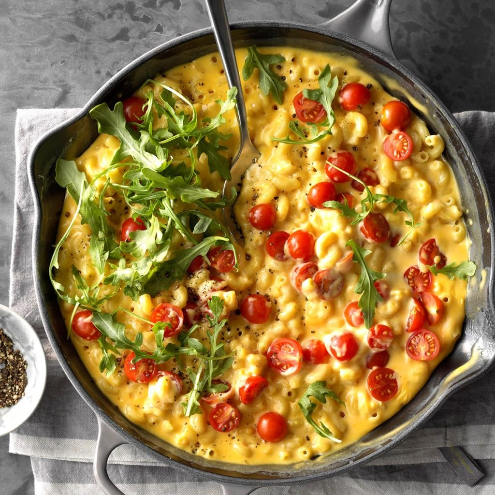

Skillet Mac & Cheese
Ingredients
2 cups uncooked elbow macaroni (about 8 ounces)
2 tablespoons butter
2 tablespoons all-purpose flour
1-1/2 cups half-and-half cream
3/4 pound process cheese (Velveeta), cubed
Optional toppings: fresh arugula, halved cherry tomatoes and coarsely ground pepper
Directions
- Cook macaroni according to package directions; drain.
- Meanwhile, in a large cast-iron or other heavy skillet, melt butter over medium heat. Stir in flour until smooth; gradually whisk in cream. Bring to a boil, stirring constantly. Cook and stir until thickened, about 2 minutes. Reduce heat; stir in cheese until melted.
- Add macaroni; cook and stir until heated through. Top as desired.
Nutrition Facts
1-1/2 cups: 600 calories, 37g fat (23g saturated fat), 144mg cholesterol, 1185mg sodium, 40g carbohydrate (9g sugars, 1g fiber), 23g protein.
Total Time
Prep/Total Time: 25 min.